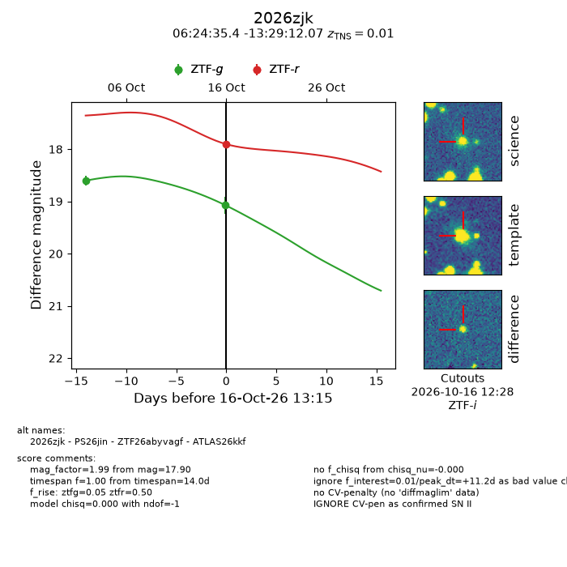
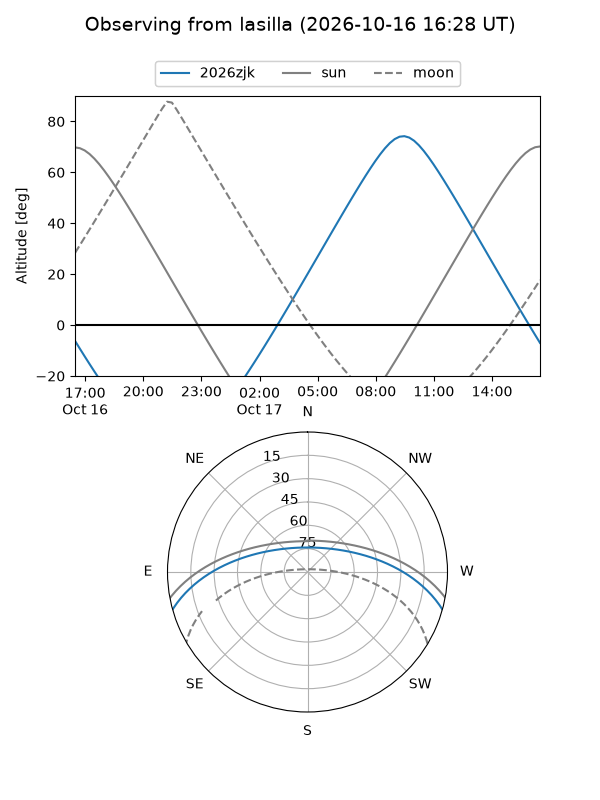
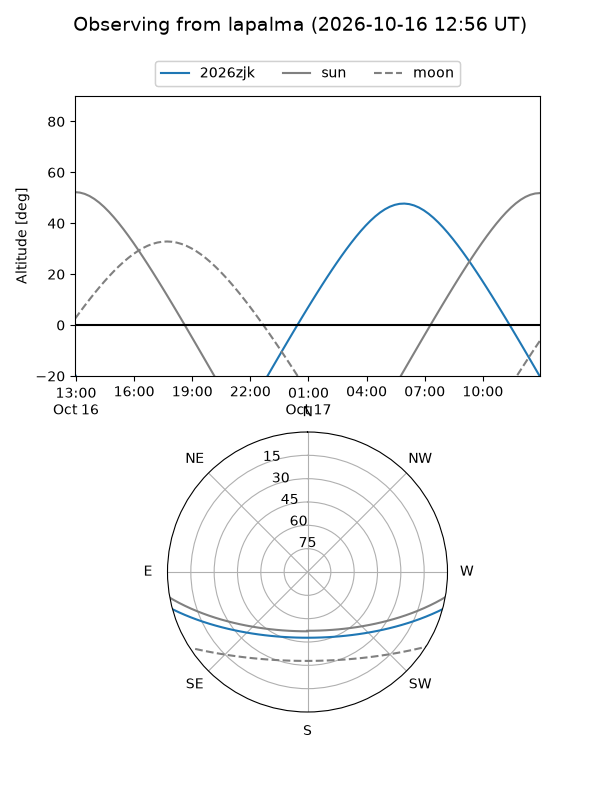
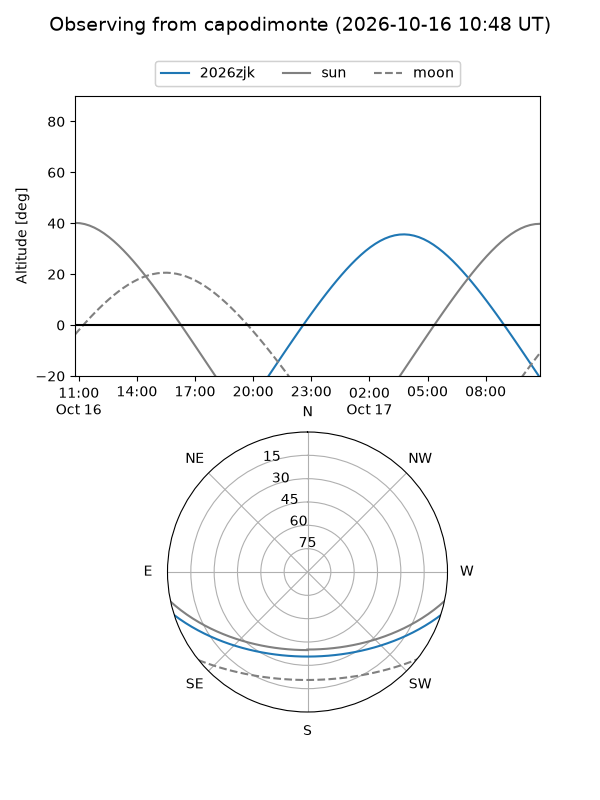
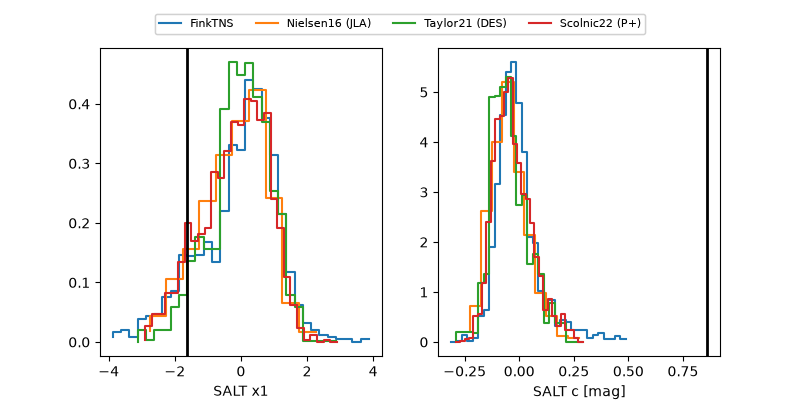

2026zjk
Target 2026zjk at 2026-10-16 13:16
Aliases and brokers:
FINK-ZTF: ztf.fink-portal.org/ZTF26abyvagf
Lasair-ZTF: lasair-ztf.lsst.ac.uk/objects/ZTF26abyvagf
ALeRCE-ZTF: alerce.online/object/ZTF26abyvagf
YSE-PZ: ziggy.ucolick.org/yse/transient_detail/2026zjk
TNS name: wis-tns.org/object/2026zjk
Direct TNS query: direct search
alt names
ZTF26abyvagf (ztf,fink_ztf)
2026zjk (tns,yse)
ATLAS26kkf (atlas)
PS26jin (panstarrs)
Coordinates:
equatorial (ra, dec) = 96.1474,-13.48669
equatorial (HMS+DMS) = 06:24:35.38,-13:29:12.07
galactic (l, b) = (222.0925,-11.97574)
Flags:
TNS type: SN II
TNS redshift: 0.0100
peak dt: +11.2
Photometry:
last ztfg=19.07, ztfr=17.90
2 ztfg, 1 ztfr detections
Lightcurve

Visibility



Additional plots
